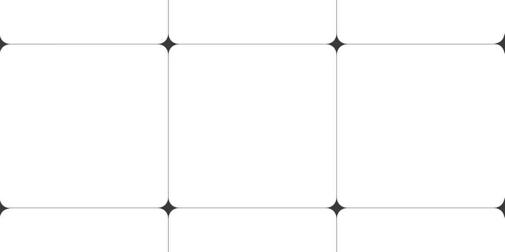
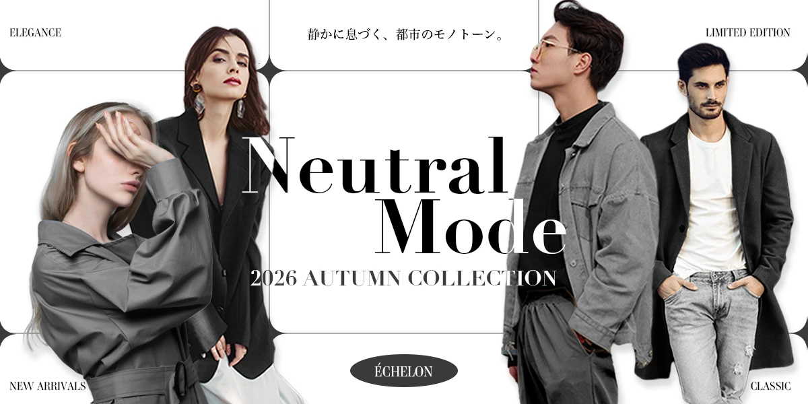

ÉCHELON
制作期間
デザイン：6時間
使用ツール
Photoshop
生成AIの使用
-
Gemini
操作・機能の質問 -
Claude
操作・機能の質問
見え方の相談
概要
架空のアパレルブランド「ÉCHELON（エシェロン）」の、2026年秋コレクションを告知するWebバナーです。
ターゲット
洗練されたモードなファッションが好きな、都会的な大人。
シンプルでエッジの効いた、ユニセックスなスタイルに関心がある人。
目的
モノトーンのコレクションであることが一目で伝わり、特集ページを見てみたくなることを目的としました。
高級ブランドのルックブックのような雰囲気にすることで、クリックのきっかけになることを意識しました。
コンセプト
「静かに息づく、都市のモノトーン。」
白と黒、その間にあるグレーの階調だけで構成した、男女どちらにも合うスタイルをテーマにしました。
元々はカラー写真だった4人のモデルの服をグレーの階調に揃えて、並んでも浮かないトーンにしています。
ブランド名の「ÉCHELON」は、フランス語で「段階」を意味する言葉で、白から黒へ移るグレーの階調に重なる名前として採用しました。
デザイン
元の写真は、ブラウンやブルー、ベージュなどの服でしたが、クイック選択ツールで服をパーツごとに選択し、グレーに変更しました。
左端のモデルの服には、トーンカーブで明暗の差を整えています。背景は細いグリッドの線で区切り、線が交差する位置に、多角形ツールで作った星形の飾りを置きました。
星の比率を調整してくびれの形を整え、白い画面に奥行きを出しています。
中央のタイトルは、モデルと重なる部分だけが白、白い背景の上では黒に切り替わるようにしました。
最初は描画モードの「差の絶対値」を試しましたが、グレーの服と重なる部分が中間のグレーになって読みにくかったため、黒い文字の上に同じ文字を白で重ね、モデルの形のレイヤーマスクで、重なる部分だけ白が見えるようにしました。
モデルにはごく薄いドロップシャドウを入れて、白い服が白い背景に溶けないようにしました。
右側のモデルの1人は、手に持っていたものをマスクで消し、左右反転して左向きにしています。
※ 本作品の画像は、以下のサービスで入手・生成した素材を使用しています。
ストックフォト: Adobe Stock、Unsplash
